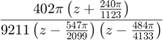
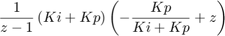

Contents
Ogata Digital Control Systems B-4-10
eta = 0.5, at least eight samples per cycle of damped sinusoidal oscillation T = 0.2
pid(1,1,1,0,1) % showing how to use pid command in matlab
ans =
Ts z-1
Kp + Ki * ------ + Kd * ------
z-1 Ts
with Kp = 1, Ki = 1, Kd = 1, Ts = 1
Sample time: 1 seconds
Discrete-time PID controller in parallel form.


wdOws = 1/10; % samples per cycle T = 0.2 % sampling period zeta = 0.5 % damping ratio G1 = zpk([],[-1,-5],10) G1dsc = c2d(G1,T,'ZOH') polezMag = exp(-2*pi*zeta/sqrt(1-zeta^2)*wdOws) polezPhase = 360*wdOws [x,y] = pol2cart(deg2rad(polezPhase),polezMag) zeval=x+j*y
T =
0.2000
zeta =
0.5000
G1 =
10
-----------
(s+1) (s+5)
Continuous-time zero/pole/gain model.
G1dsc =
0.13711 (z+0.6714)
---------------------
(z-0.8187) (z-0.3679)
Sample time: 0.2 seconds
Discrete-time zero/pole/gain model.
polezMag =
0.6958
polezPhase =
36
x =
0.5629
y =
0.4090
zeval =
0.5629 + 0.4090i
picontroller = pid(1,1,0,0,0.2) syms Ki Kp z Gz = 0.13711*(z+0.6714)/ ((z-0.8187)*(z-0.3679)) PIsym = (Kp + Ki)*(z-Kp/(Kp+Ki))/(z-1) Gtot = Gz*PIsym subs(Gtot,z,zeval)
picontroller =
Ts
Kp + Ki * ------
z-1
with Kp = 1, Ki = 1, Ts = 0.2
Sample time: 0.2 seconds
Discrete-time PI controller in parallel form.
Gz =
((13711*z)/100000 + 46027827/500000000)/((z - 3679/10000)*(z - 8187/10000))
PIsym =
((z - Kp/(Ki + Kp))*(Ki + Kp))/(z - 1)
Gtot =
(((13711*z)/100000 + 46027827/500000000)*(z - Kp/(Ki + Kp))*(Ki + Kp))/((z - 1)*(z - 3679/10000)*(z - 8187/10000))
ans =
(Kp/(Ki + Kp) - (5069939813455067/9007199254740992 + 7367053777805345i/18014398509481984))*(Ki + Kp)*(- 13991296674578045982507313170081663146999271915019268585238652171803844347909245403343854092504801963147264/17849138812784708883680177920827911560263445680877974927611724636642837639412230156582242731700586400204345 - 99488983890961827975732109900261916751577575855066149263417015503119745812659546960602670455858298601078784i/89245694063923544418400889604139557801317228404389874638058623183214188197061150782911213658502932001021725)


Find angle defiency compute angle for pole z+0.6714 at z of interest
zero1 = subs(z+0.6714,z,zeval); angle1 = angle(zero1) vpa(rad2deg(angle1),10) rad2deg(vpa(angle1,10)) % compute angle for pole 1/(z-0.8187) at z of interest pole1 = subs(1/(z-0.8187),z,zeval); angle2 = angle(pole1) vpa(rad2deg(angle2),10) % compute angle for pole 1/(z-0.3679) at z of interest rad2deg(vpa(angle2,10)) pole2 = subs(1/(z-0.3679),z,zeval); angle3 = angle(pole2) vpa(rad2deg(angle3),10) rad2deg(vpa(angle3,10)) pole3 = subs(1/(z-1),z,zeval); % compute angle for pole 1/(z-1) at z of interest angle4 =angle(pole3) rad2deg(vpa(angle4,10))
angle1 = atan(4604408611128340625/13896716741360211286)
Error using rad2deg (line 13) Input must be single or double. Error in ELEC460A5 (line 50) vpa(rad2deg(angle1),10)
Compute angle defiency
octave:36> vpa(angle1,10) ans = (sym) 0.3199752649 octave:37> vpa(angle2,10) ans = (sym) -2.129703542 octave:38> vpa(angle3,10) ans = (sym) -1.125903183 octave:39> vpa(angle4,10) ans = (sym) -2.389393736
phi = pi +0.3199752649 -2.129703542 -1.125903183 -2.389393736; angleContribution = rad2deg(phi); % the angle should contriubtion 125.1015 degrees % https://www.wolframalpha.com/input/?i=tan(0.4090%2F(0.5629%2Bw))%3D+125.1015%5Eo, % evalulating the expression when n = 0 % 0.0001*(-2334.4566)/(1.1413140294029025) % -0.2045
know that kp/(kp+ki)=0.2045